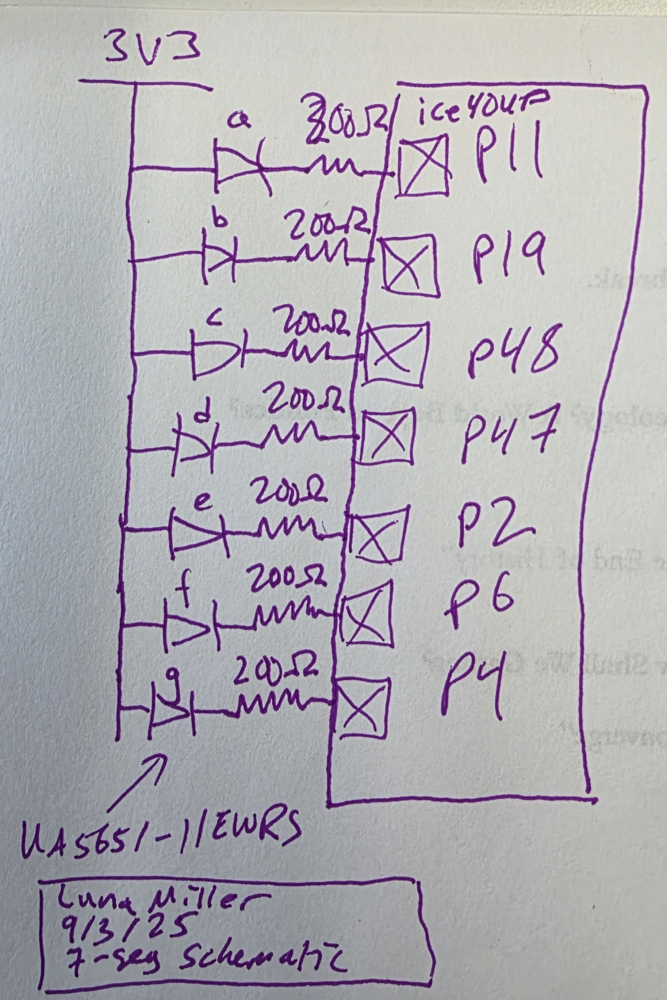
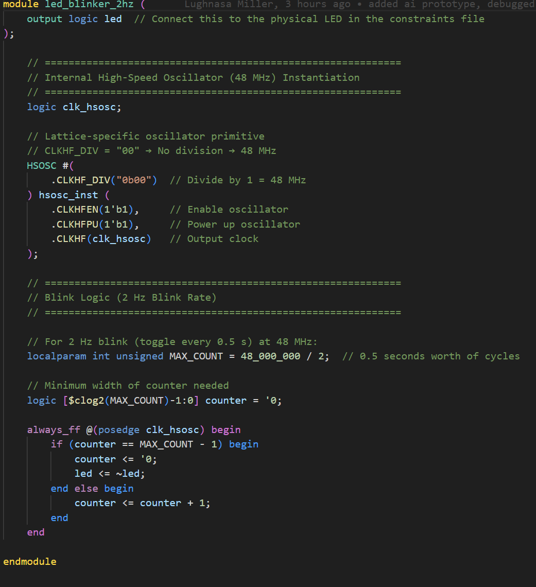

HMC E155 Lab 1: FPGA and MCU Setup and Testing
Introduction
In this lab, functional testing was done on a newly constructed E155 development board to confirm that all components placed and soldered onto the board functioned as intended. Following this, a breakout breadboard was constructed to control a 7-segment LED display using switches on the development board. LEDs on the board also implemented combinational logic that was controlled by the same switches, and an oscillating LED was set up using the onboard 48 MHz oscillator native to the iCE40 UltraPlus FPGA.
Block Diagram
The block diagram in the below image shows the hierarchical structure of the Verilog modules written for this lab. The top module (lab1_ly) contains all other modules, and the HSOSC module from the UP5K board is used. A counter module was written to modulate the clock down to 2.4 Hz on the 31st bit of the counter, allowing it to operate the LED. Two separate decoders were used to determine the values of the 7-segment decoder outputs and the LED outputs based on the 4-input switch and the status of the MSB on the counter.
 Figure 1: Block diagram of hierarchical SystemVerilog
Figure 1: Block diagram of hierarchical SystemVerilog
Schematic
The two schematics below show how the LEDs in the given system are powered. The 7-segment display is given a 3.3V input, and pins at the end of them are pulled high to turn off a given segment. The voltage drop across any LED is ~ 2V, and to stay in spec of both the FPGA pin and the operating range of the LED, a 7 mA current was selected. Using this information, the optimal current limiting resistor would have a value of \(R = \frac{V}{I} = \frac{1.3}{.007} = 192 \Omega\). Thus, a 200 \(\Omega\) resistor was selected as a current limiting resistor. The switch outputs were also routed through FPGA fabric logic synthesized from SystemVerilog modules with a 1k \(\Omega\) resistor as a current limiting resistor as per board spec.
 Figure 2: Schematic for the onboard LED outputs
Figure 2: Schematic for the onboard LED outputs
 Figure 3: Schematic for the off-board 7-segment LED display
Design Testing and Methodology
The onboard oscillator was used from the iCE40 UltraPlus FPGA to generate a clock pulse, which was used with a SystemVerilog counter/clock divider module to control the oscillating LED. The four switches on the development board were used to represent the four binary bits of a hexadecimal number, and these switches also used a SystemVerilog control module to determine when onboard LEDs should be enabled. A control module was written to determine the input hexadecimal number and output the appropriate 7-segment display signals, with the signals themselves being active low. All current-limiting resistors for the 7-segment display were determined with a target current of 7 \(\mu A\) and a voltage drop across the LEDs of 1.95 V, leading to a resistance value of ~ 200 \(\Omega\).
All modules were tested using automatic Verilog testbenches as shown in the Results and Discussion section.
Results and Discussion
Testbench Results
All modules that had custom code written for this lab were verified using automatic Verilog testbenches. These testbenches all confirmed appropriate functionality of the modules, save for the top level, which had issues due to the use of the included HSOSC module on the Radiant software that was not present in QuestaSIM. However, this functionality was confirmed for all lower level modules, and no additional logic exists between the lower level modules and the outputs of the top level modules.
Sample File Test Results
All functions of this development board were verified through completion of this lab. Using prewritten test code, the LEDs on the board were verified to work with the SMD 1k \(\Omega\) resistors chosen for the boards. The FPGA was able to control LEDs 5-7, and the MCU was able to control LEDs 1-4. The power LED (0) also worked whenever the board was supplied with an appropriate power feed through USB.
7-Segment, Combinational, and Oscillating LEDs Module
Upon testing all 16 possible configurations of the switches, appropriate function of the LEDs that functioned based on combinational logic was achieved. Additionally, the 2.4 Hz flashing LED was creating using a counter with a 32 bit register and a P value of 215. Combined with the on-board 48 MHz clock, this achived a frequency of 2.403 Hz on the flashing LED. Appropriate function was also confirmed for the 7-segment LED display, which appropriately displayed values 0-F in hexadecimal.
Conclusion
In this lab, I created a SystemVerilog hierarchy and accompanying breakout board that controlled 3 LEDs using an oscillator, switches, and combinational logic and controlled a 7-segment LED display using switches and combinational logic. This lab took me 8 hours overall.
AI Prototype
Following the directions for the AI Prototype for lab 1, the following prompt was passed into ChatGPT:
Write SystemVerilog HDL to leverage the internal high speed oscillator in the Lattice UP5K FPGA and blink an LED at 2 Hz. Take full advantage of SystemVerilog syntax, for example, using logic instead of wire and reg.
The model handled this shockingly well, and no major errors were found in the code itself. It used a slightly lazy way to create a counter, resetting the counter value every time the correct number of cycles had passed rather than creating a counter that uses a P value and the final bit of an N bit counter (as taught in E85). However, this compiled and worked in the Radiant simulation. However, a minor issue that I did notice was that ChatGPT thought the onboard high speed oscillator operated at 12 MHz, not 48 MHz as it actually operates. When this was pointed out to GPT, it quickly corrected that line.
 Figure 4: Code for the oscillator written by ChatGPT, which has many strange ways to specify bit length but otherwise seems very feasible
Another issue that I noticed is that the bit lengths of many constants were not specified. Knowing how many different examples of counters must be in the model, it makes sense that these things would be issues, but it still is slightly surprising that it was so much of an issue. A lot of them only generated warnings in Radiant, but if the code were to be passed through something like Verilator or another SystemVerilog linting program, it would likely point out a lot of other isues as well.